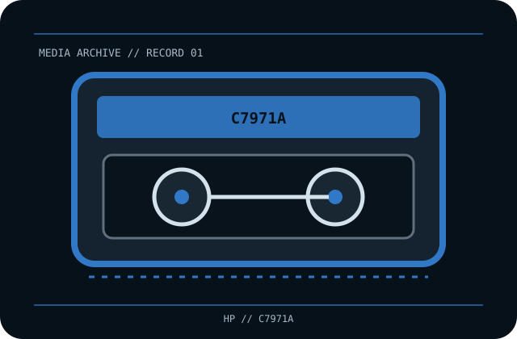

[ REMOVABLE MEDIA // MAGNETIC TAPE ]
HP LTO Ultrium 1 100 GB Data Cartridge (C7971A)
Linear Tape-Open Ultrium Generation 1 (LTO-1), half-inch single-reel data cartridge; rewritable. This record identifies the media only; drive, host interface, firmware, software and any enclosure are separate.

EXACT SKU: HP C7971A. The record distinguishes nominal uncompressed capacity from any compressed estimate and documents generation-specific host compatibility.
Format generation, capacity and compatible drives
| Manufacturer / exact SKU | HP C7971A |
|---|---|
| Format / generation | Linear Tape-Open Ultrium Generation 1 (LTO-1), half-inch single-reel data cartridge; rewritable. |
| Native capacity | 100 GB native (uncompressed). |
| Compressed capacity | Up to 200 GB at the nominal 2:1 compression assumption; actual capacity is data-dependent and is not guaranteed. |
| Compatible drive generations | LTO-1 drives read/write. LTO-2 drives support LTO-1 read/write under the LTO backward-compatibility matrix; LTO-3 drives may read, but not write, LTO-1 media. Confirm the exact drive manual and firmware. |
| Interface and scope | The cartridge/disc has no direct host-computer interface. The compatible drive supplies its own SAS, Fibre Channel, SCSI, USB or other host connection; check the exact drive specification and driver/software chain. |
| Compatibility caveat | C7971A is LTO-1, not LTO-2/C7972A. 200 GB is a compression estimate, not the native capacity or a promise. Do not force it into a drive; later-generation compatibility is limited to the LTO matrix and exact drive support. |
Tape handling and preservation
Keep the cartridge in its case, away from dust, smoke, liquids, heat, direct sun and strong magnetic fields. Handle by the shell, never touch tape or leader, acclimate after temperature changes, and observe drive cleaning/environment instructions. Retain labels and packaging; checksum transferred data and test restores.
- Document the exact printed model, serial/batch or date code, write-protect/WORM status and source of the medium.
- For valuable data, keep at least two independently verified copies, record checksums, test restoration and plan migration before compatible hardware becomes unavailable.
Model-specific preservation and compatibility notes
Preservation note: magnetic tape is a format-dependent, obsolescence-prone medium. Keep a verified reader path and independent copies.
C7971A is LTO-1, not LTO-2/C7972A. 200 GB is a compression estimate, not the native capacity or a promise. Do not force it into a drive; later-generation compatibility is limited to the LTO matrix and exact drive support. Never infer interoperability from a similar cartridge shell, connector, brand or family name; confirm drive-generation support in the exact manufacturer's manual.
Manufacturer and archival references
- HP — LTO Ultrium drive/media manual (archival PDF)HP-hosted manual covering supported Ultrium media generations and safe operation.
- LTO Program — generation compatibilityFormat compatibility table; use it alongside the exact drive manual.
- RS — HP C7971A cartridge listingExact C7971A product identity and nominal capacity reference.
Capacity, compatibility and handling are specific to this model and its supported drive generation. For legacy equipment, preserve the manual and test an end-to-end read before relying on the cartridge for migration.